MY WORK
Infographics
What Should I Buy? Apple vs. Microsoft
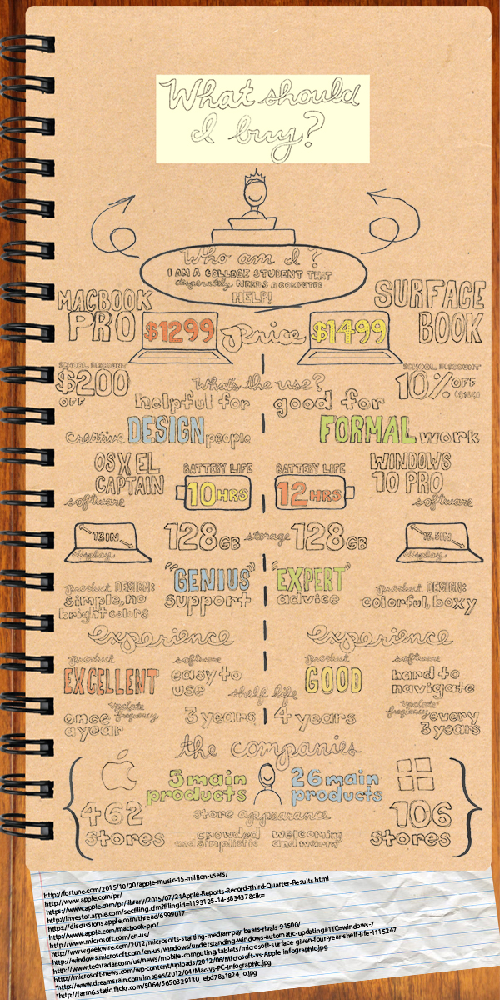
For my Information Visualization class, students were assigned to pick two entities and compare them for a specific target market in the form of a visual infographic. My partner and I chose to compare how college students approach Apple and Microsoft when buying a computer.
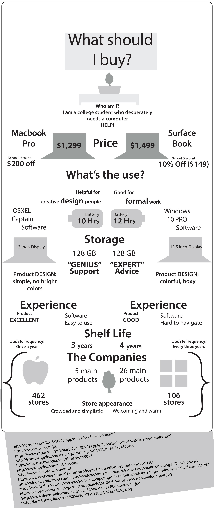
To begin, we researched both companies and narrowed down the information to what is important enough for the infographic. I then made the low fidelity comp. By seeing what information we had collected, I was better able to create an effective hierarchy for the work. Above is a representation of this low fidelity comp, with information organized from the most to least important. In order to really make it work, we had to view this from the perspective of the student.

Finally, it was time to turn our ideas into design. Since this is coming from a student's perspective, I chose to make it more personal by drawing all of the typography out. I brought the drawings into Photoshop where I edited all of the text for the infographic I then turned an image of cardboard into a notebook, added a wooden background, sources, and finally, the information. I then finished by adding some color to the most important text.
Here's the Skinny
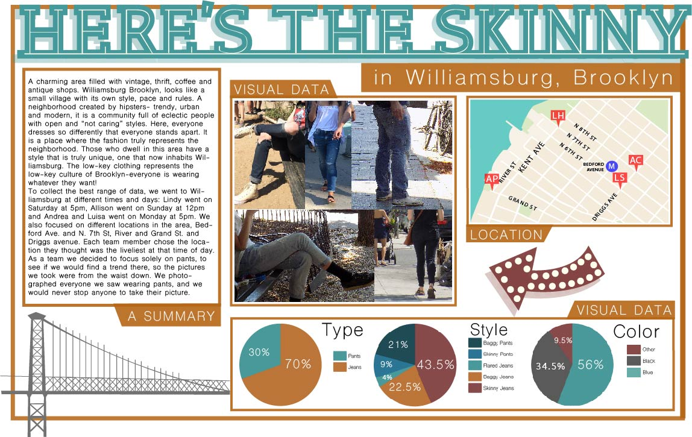
For this Bill Cunningham inspired project, I was put into a team of 4 and we were to predict a trend by taking pictures each of one preselected article of clothing in a certain part of the city, as the photographer would do. My team chose to work on studying pants in Williamsburg. This was a group project in which I worked on the overall design, layout, and hierarchy of data as well as any additional visual elements.
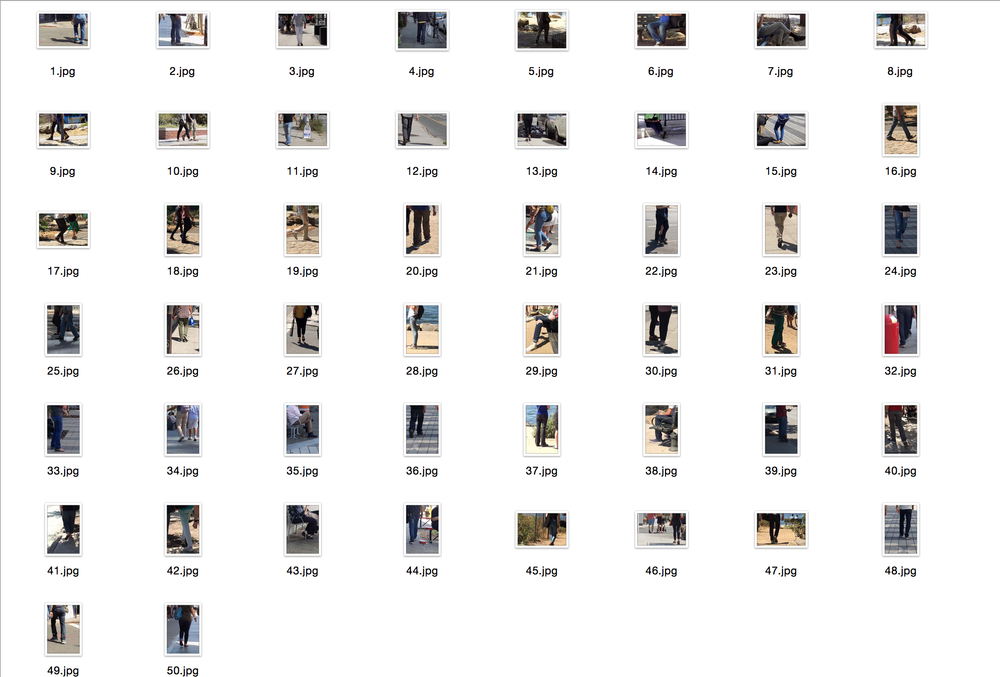
To start, we took 50 pictures around Williamsburg, solely of pants. I edited these all on my computer, and started looking for trands within my findings. We all brought our information to class and began to make graphs off of what we found.
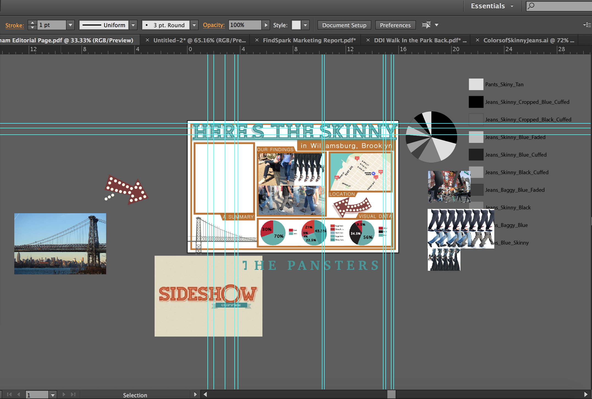
Next was the design. Since we collected data in Williamsburg, I thought it would be interesting to pull that hipster feeling into the design, so I chose to go with a color palette of rust and duller colors that contrasted. I added borders around all the data so that the hierarchy is more defined and the piece overall looks neater.
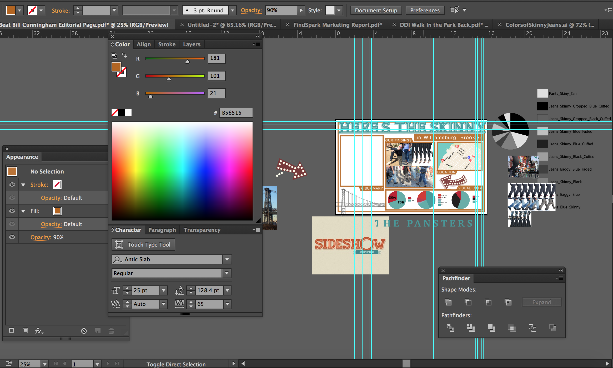
I added simple visuals such as the bridge going into Williamsburg on the left and the arrow that resembles a sign on the right from my travels in the area. I manipulated the font used in the title so it could really stand out to the viewer and give them that Williamsburg feel. Finally, I created a map of the area in Illustrator to represent our travels through the area. We were suprised to find that the classic blue skinny jean is not going out of style any time soon.
Illustration
DDI Walk in the Park Logo
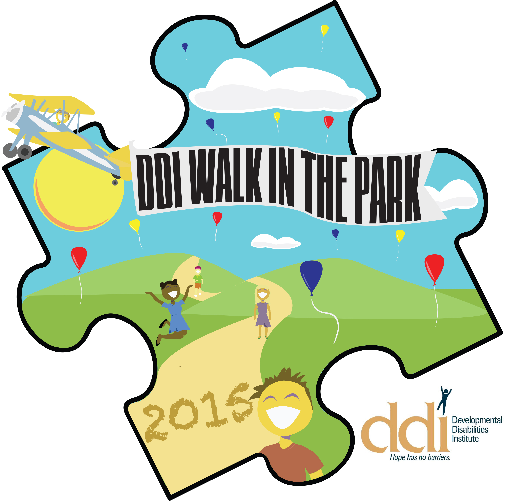
Developmental Disabilities Instutue is a school that specializes in teaching members of the austistic community. Each year they hold fundraisers for the school and the children. For this year's event, I was asked to create a logo that represents their "Walk in the Park" event.
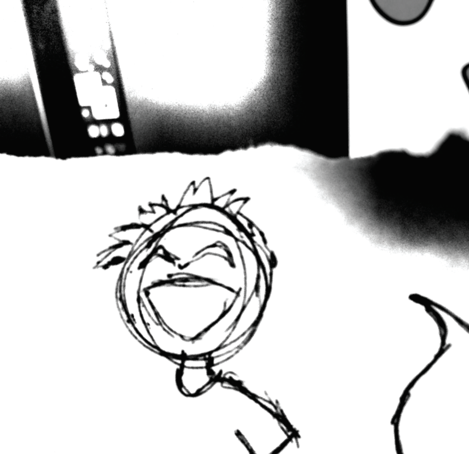
I started by drawing my ideas out on paper. I wanted to incorporate the iconic puzzle piece symbol prominently so I decided to use that as a border for the rest of the work. I also wanted to make the piece fun since in previous years, logos for these events have lacked imagination. I drew out ideas of what I wanted the kids to look like and then I scanned my drawings into Illustrator where I began to manipulate them.
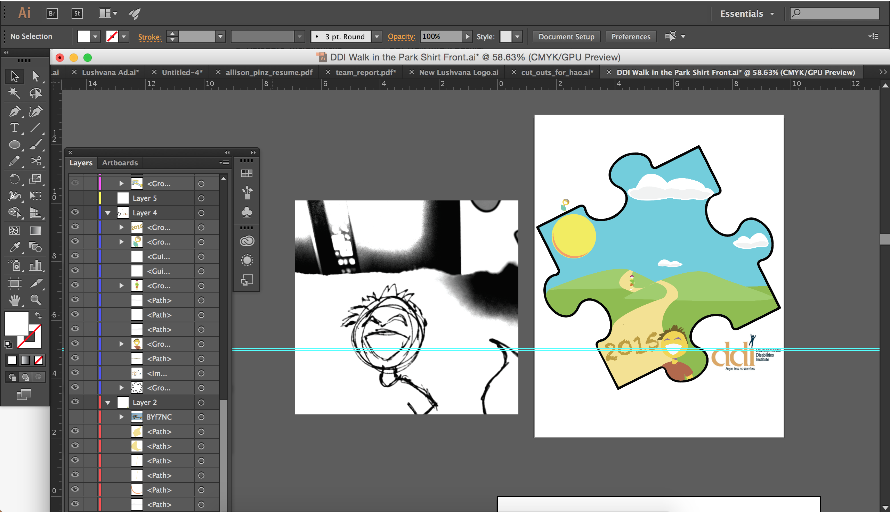
In Illustrator, I first put in that puzzle piece border, and then I worked from the ground up. I wanted the setting to resemble a park so I left a lot of greens and blues in there. I then added the people. I traced over my drawings, and then worked with them more so they were just right. I then experimented with text, and then finished by adding some fun elements like the biplane and the balloons so the logo can really pop out at the viewer.
Output Observational Presentation Drawings
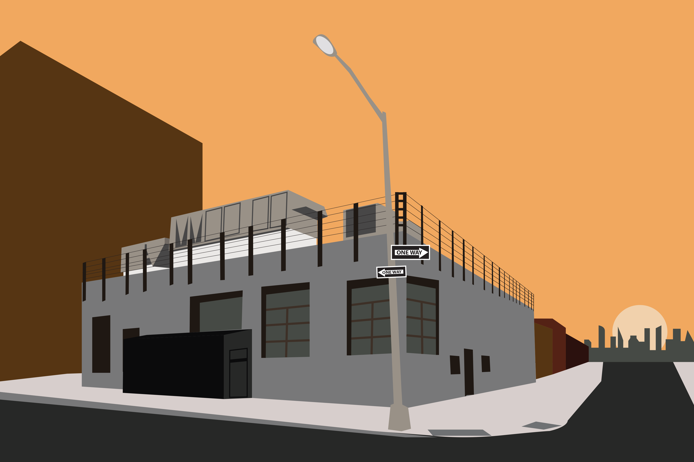
For my Managing Creative Projects and Teams class we are put into teams and we must do a semester long observation of a working team and give a presentation on it. We are observing the team at club Output and I was in charge of the design for our presentation.
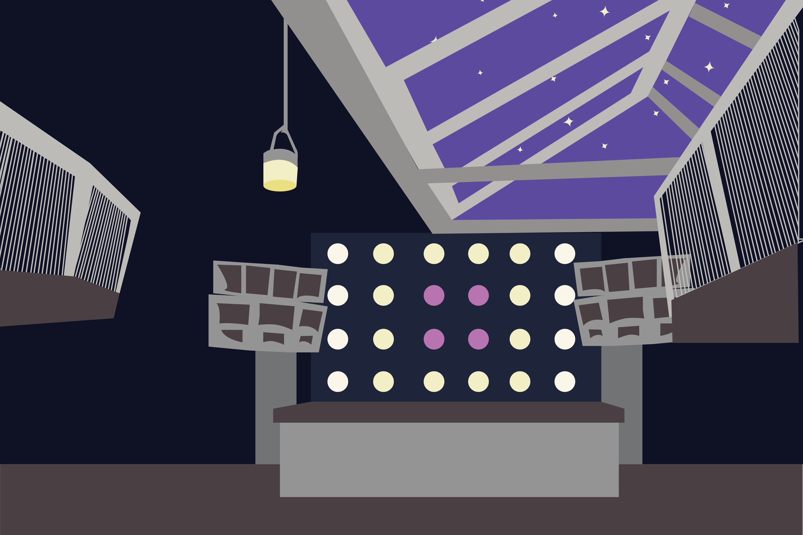
I started by going to the venue with my group. We did an observation of the outside, and then they checked my drawings to see if I got the inside right. I wanted the presentation to feel as if you were experienceing the club for yourself. I started by taking an image of the outside and drawing over it in Illustrator. I then added elements such as the sky to represent that it's the end of the day. I also included the Manhattan skyline in the background.
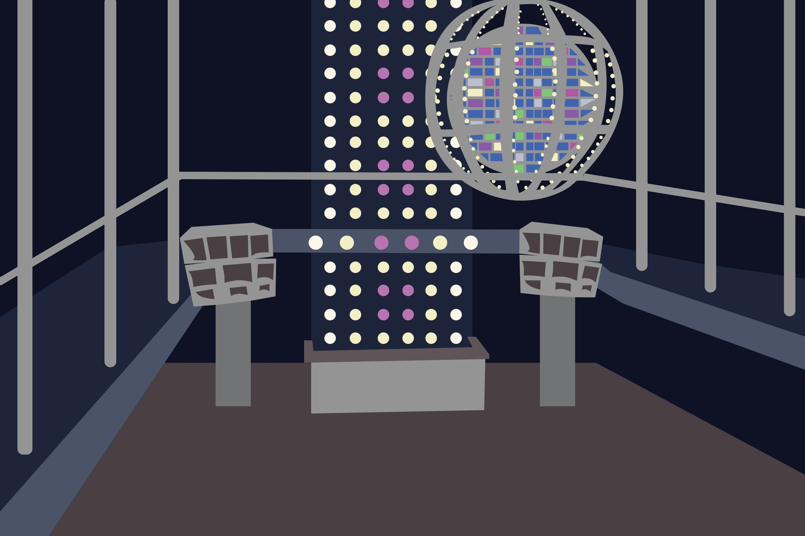
I then worked on the inside images. I was inspired to use the color pallet from the advertisements Output puts out. I used images from online and drew over them in Illustrator. I left the indside bare so when presented viewers can get a better idea of what the place looks like.
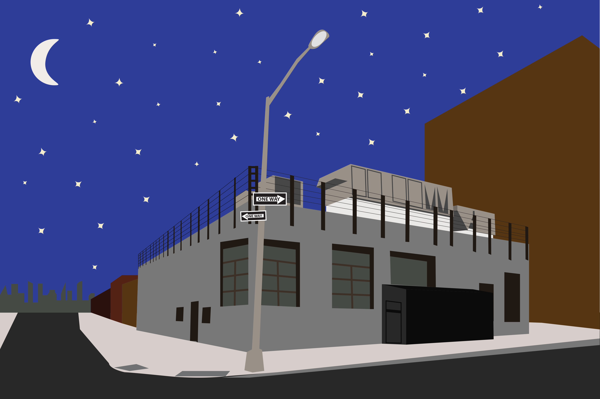
Finally, I finished with the outside. I made the sky darker and added a moon as well as some stars to represent the night sky. I also flipped my first drawing so it looks as if you're leaving a different way then when you came into the building.
Research
Sound as Research
The Sound as Research Project, our final project in Studio, proved to be both the most intricate and challenging.We were given the task of observing a public space and representing the information we have gathered in our own way through sound and sight. I decided to research the New York Public Library because I have always admired the social and scholarly atmosphere of the library.
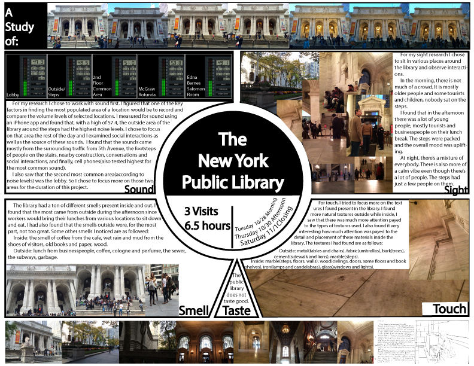
I visited 3 times the first week for a total of 6.5 hours. The first week I was there I decided to write journal entries on my experience that day. I listed the interactions of the people as well as the sound. I walked around the library measuring where the most sound was and figuring out the areas I should focus on the most. The lobby and the steps outside had the most activity and I worked there. I also took pictures. At the end of the week I put all my research and pictures together and I made an infographic of my findings. I organized my research into sight, sound, smell, taste, and finally texture.
The next week I visited a couple more times. This time I really wanted to focus on what I saw. I did some photography around the library. Next I did more detailed research notes ion what I saw such as clothing and textures. I went home and started my visualization. Before I decided on a painting, I had iterated several ideas. I decided to try painting since it was so different that what I had been doing previously. My goal was to create the activity of the library within something that represented the public space. I painted a brain the represent that scholarly feeling that is present and filed it with color. The color within the brain represents the activity in the library. I had noticed that it all happens in the center, so I wanted to emphasize on that with the bright yellow color. I was not completely satisfied with my work so I did more. I took my research and I iterated on my chart from the previous week. I added all my new information into each category and changed the background.
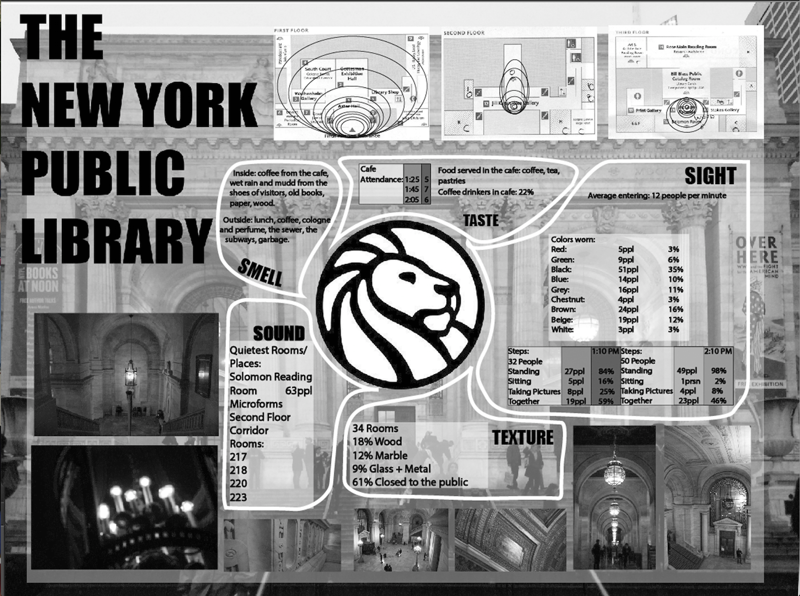
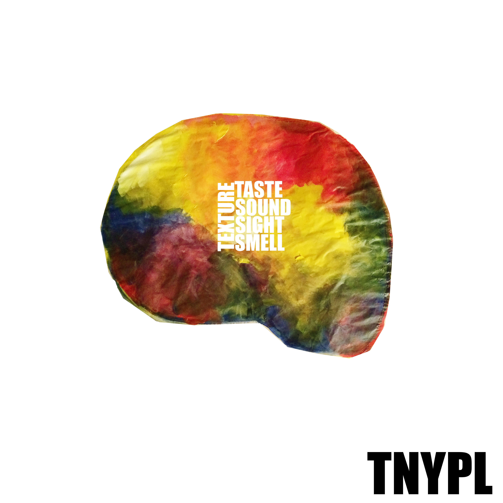
Next was sound. I visited several more times and took recordings of the outside and inside of the space. I wanted to create a sound that captured both areas so first I stood outside and took several recordings. I then moved inside where I walked around and took more recordings. I thin when home and worked on Adobe Audition to create a soundpiece. I modified some of my recordings and added a couple of sound effects to my piece.
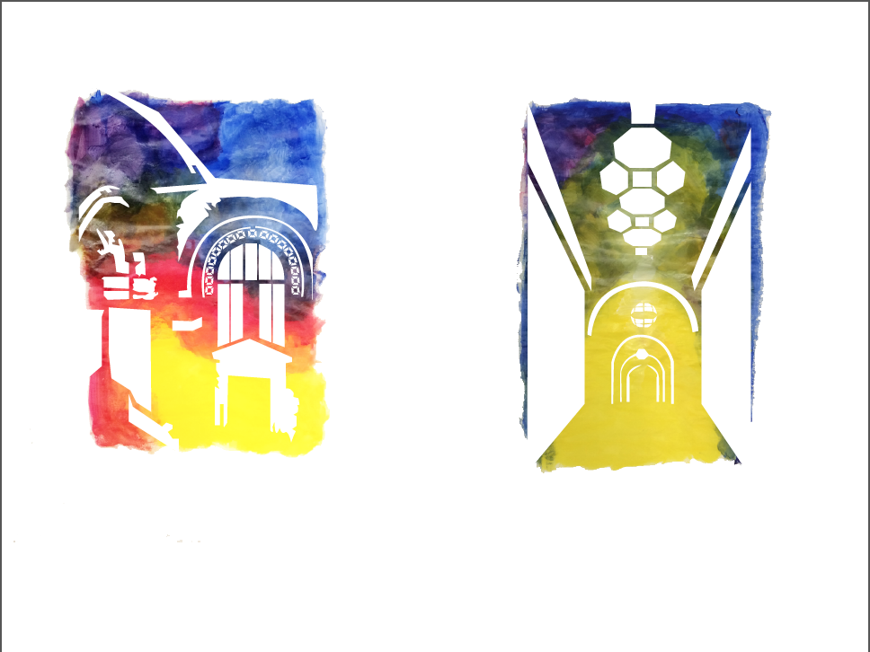
For my final presentation, I had really focused on the visual side of things. I painted brighter colors where all the activity was in certain spots of the library. I made these spots recognizable by adding white shapes that defined the space. All my findings were put into a presentation for the class to see.
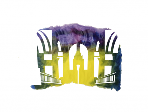
Bushwick: The Book
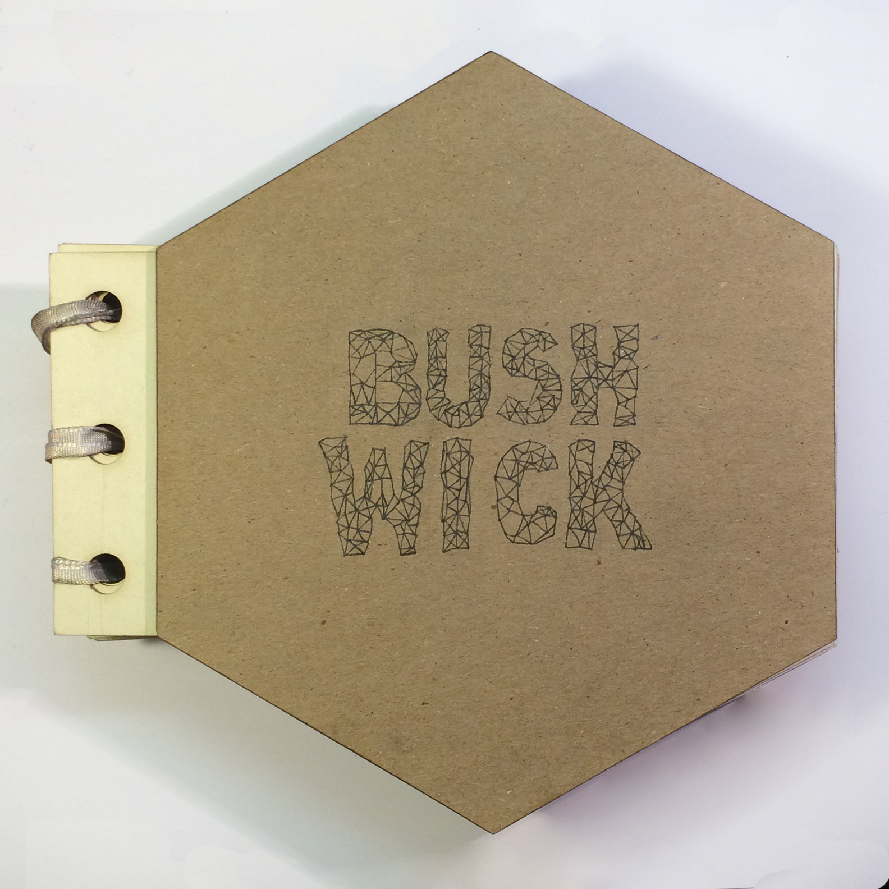
For our fourth bridge assignment in studio class students were assigned to study the areas around their subway stations and represent their observations through the form of a book. Within this book there were four main components that had to be captured: The community, features of the community(shops, landmarks, etc.), trash found around the area, and finally a profiling of the lot you have chosen for the final project with some idea sketches within 21 pages. I did the book on the Brooklyn community Bushwick.
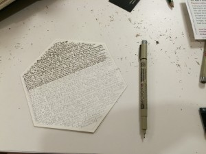
I really wanted to capture the essence of the community. After visiting the community, I had noticed that the people really came together in the Maria Hernandez Park. I really wanted to incorporate that important community feature into my book, so I replicated the bricks within the park as hexagons.
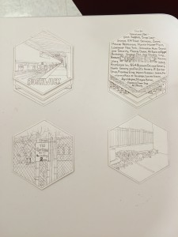
I then focused on materials. Bushwick, even though it is going through an incredible gentrification, still has some old charm to it so I decided to use two pieces of recycled chipboard for the covers. I knew that most of my project would consist of watercolor paintings and line drawings so I decided to stick with the recommended watercolor paper for my pages backed by lighter pieces of chipboard for support.
I made two Illustrator files, one for the covers, and the other for the pages. I brought them to the laser cutting lab with my materials where I cut out all of the pages and covers
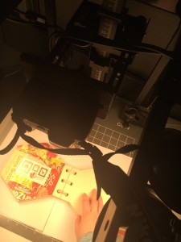
Once I had my materials cut I started sketching. I first worked on the more intense pages such as the pages with wording and then I moved onto the sketches. For each page I first played with layout. I measured it, centered pictures and wording, and decided what it was exactly that I wanted on each page. I decided to start each section with two different types of wording, a basic font and then I also drew and replicated the font Adamas. I drew out each page and wrote down every word first with a light pencil then with Micron pen.
Once I had all my pictures drawn in and gone over with Micron, I moved onto the watercolor painting. For this process I first erased every line off of each page so that when I went to paint it would not mix with the lead of the pencil. I then started mixing colors and decided what it was I was going to paint. I decided to have tons of color in some pictures and none in others because I felt it really went well with the entirety of the book. Some of my pictures I also felt, needed more colors than others. I painted each one and let all the pages dry for book completion.
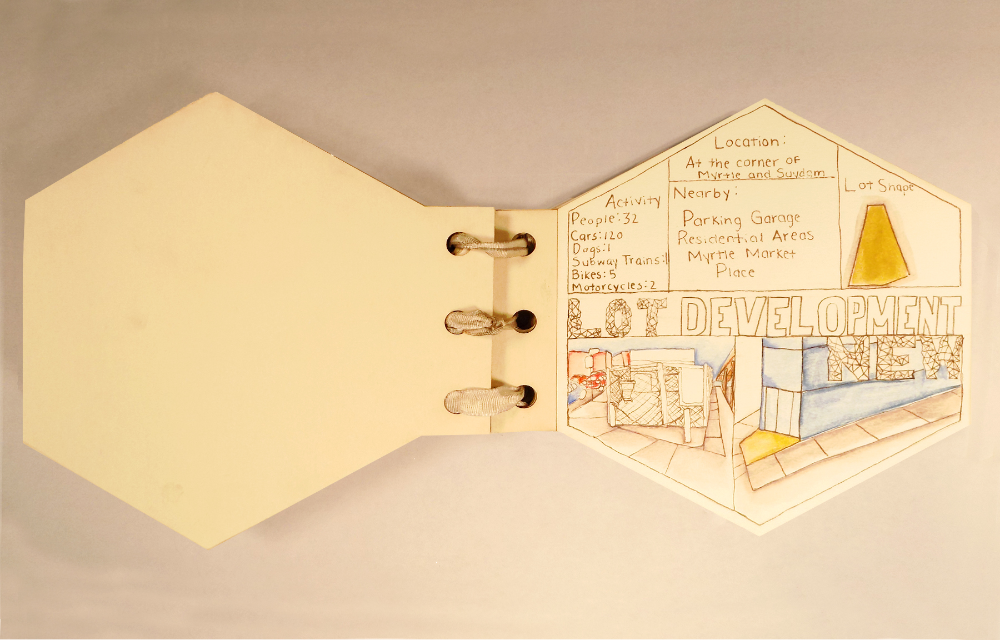
I ordered my book with images of the town of Bushwick, then shops in town(Commerce), then trash I had found, and finally the book ended with images of my final project ideas. I bound my book with an antique looking ribbon, photographed it, and then my project was complete.
HTML/CSS
Style an Interview: Jon Setzen
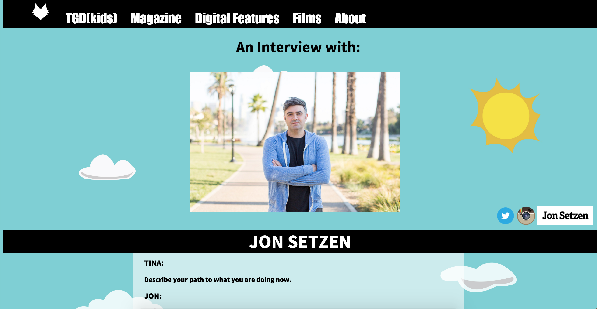
For this project, I was to select an interview and redesign it, for a diffeent target market than the one originally intended. I chose to redesign an interview on entrepreneur, and designer Jon Setzen since I really like what he stands for. Originally, the article was greared more towards young professionals, or people looking to start over in their career field. But I saw this as more of an opportunity to highlight the amount of failure Setzen went through to be where he is. I decided to redesign the article for children and teach them that failure is nothing but a stepping stone to success.
For this project, I really had to keep the target market in mind. Children only have so much attention when it comes to readings, so to make it interesting I decided to narrow down the reading as much as possible and add some bright illustrations throughout.
I started with the content. I wrote out a docment with my goals and inspirations for the project and then I began to cut the article down. I took out any fluff or anything that didn't relate to this new message- failure is ok. Then I simplified any language or phrases that may be too hard to understand. I made the reading as simple as possible with the message in mind.
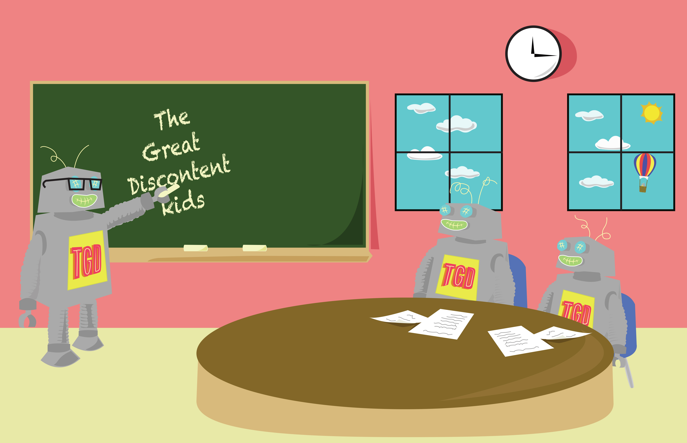
Next was the backgrounds. To really get children interedted, I wanted to add this storybook-like element to the page. I drew out my ideas on paper then transfered them over to Illustrator. I illustrated a homepage and the page for the interview. The homepage is much more simple in that it features just a robot teaching some robot student, while the interview page contains robots flying through the air as you school down the page. The interview background is featured in the windows of the homepage.

I then began the design work. To start, I created a static menu at the top of the page. I tried to make it look as if it were part of the source website(The Great Discontent) by linking all of the items on the menu to the ones on the site. I also included their logo in the top right. I then moved on to the style of the text. I wanted it in the center of the page so that the illustration in the background could feature elements on the side as children scroll down, so I created a section for the text in the middle. I left aligned the text from the interview and put it in the center with a white background that has a lower opacity so the piece overall can be seen, enjoyed, and most importantly, taught.